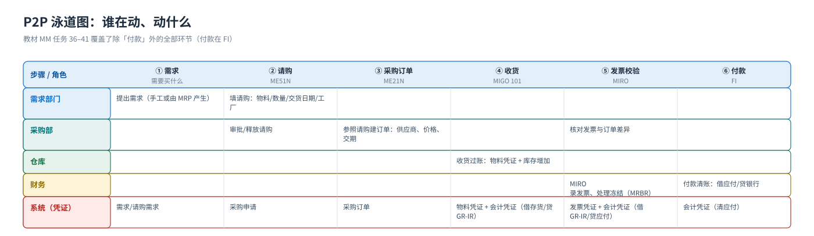
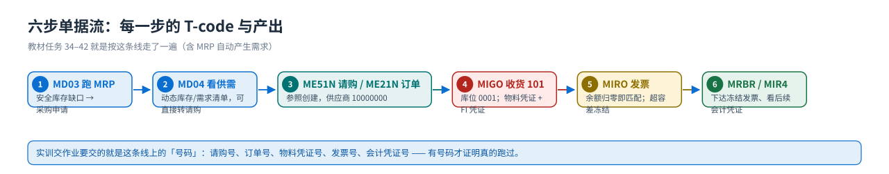

端到端流程
从需求到付款（P2P）：泳道图、单据流与记账影响
端到端采购流程（P2P, Procure to Pay）：需求 → 请购 → 采购订单 → 收货 → 发票校验 → 付款。看这张泳道图时只盯两件事：每一步谁在动、产生什么凭证；哪一步才真正改变库存和会计。
泳道图：谁在动、动什么
{kind=link}

六步单据流（每一步的 T-code 与产出）
{kind=link}

| # | 动作 | T-code（教材任务） | 产生的凭证 | 库存 | 会计 |
|---|---|---|---|---|---|
| 1 | 需求部门提采购申请 | ME51N（任务 36） | 采购申请 | — | — |
| 2 | 采购员转成采购订单 | ME21N（任务 37，可参照请购） | 采购订单 | — | —（承诺） |
| 3 | 仓库收货过账 | MIGO（任务 38，移动类型 101） | 物料凭证 + 会计凭证 | + 非限制库存 | 借：存货 / 贷：GR/IR 材料采购 |
| 4 | 发票校验（三单匹配） | MIRO（任务 39） | 发票凭证 + 会计凭证 | — | 借：GR/IR / 贷：应付账款（+ 进项税） |
| 5 | 差异检查与冻结发票下达 | MRBR（任务 40） | 释放阻塞状态 | — | 下达后才允许付款 |
| 6 | 付款（FI 侧） | F-53/F110（FI 站） | 会计凭证 | — | 借：应付账款 / 贷：银行存款 |
「什么时候可以没有收货」教材演示的是标准的基于收货的发票校验（GR-based IV）：必须先收货再开发票。也有不基于收货的采购（如服务采购、计划协议），但那样 GR/IR 的中间科目逻辑会不同 —— 换到自己系统时先查采购订单项目的「发票校验标识」（
EKPO-WEPOS）。记账影响：MM 的三组自动记账科目
| 事务键 | 管什么 | 教材科目 | 什么时候用 |
|---|---|---|---|
BSX | 存货记账 —— 找「存货科目」 | 12430101 存货-产成品（另有 12310101 等） | 所有物料移动都会带一行存货分录（教材任务 28 S4–S6） |
WRX | GR/IR 清算科目（材料采购） | 12010101 材料采购-GR/IR | 收货与发票校验的对手科目 |
GBB | 库存记账的冲销输入（费用/成本侧） | VBR 41010101 生产成本-原材料消耗；VAX 54010201/54010101 主营业务成本；PRD 54010301 采购价差；DIF 54010401 生产订单差异 | 按移动类型 + 移动类型 + 科目修改码细分（BSX 是借方那一行，GBB 是对方那一行） |
一句话记住 BSX 与 GBB 的分工
同一张物料凭证，BSX 决定存货科目（借），GBB 决定对方科目（贷：消耗/成本/差异）。所以「存货科目 = 评估分组代码/评估范围 + 评估类」，「对方科目 = 移动类型 + 科目修改码（VBR/VAX/VBO/VNG…）」。
配置入口：OBYC（教材任务 28 就是它），先跑 模拟（模拟按钮里输入物料/工厂/移动类型，系统会告诉你它要哪个键）。
顺序错误会怎样（教学现场真实会遇到的）
| 做错的事 | 系统的反应 | 正确做法 |
|---|---|---|
| 没维护信息记录就想让订单自动带价 | 价格空，回车报错或需要手输 | 先 ME11 建信息记录（或直接手输价格并接受无货源） |
| 物料没有评估类就收货 | 收货报错「评估类未维护」 | MM02 在会计 1 视图补评估类 3000（教材任务 22 的提示） |
| 发票数量 > 收货数量 | 抛出差错/警告（受容差 B1/B2、发票容差控制） | 先补收货，或在容差内放行；超容差 → 发票被冻结 → MRBR 下达 |
| 先开发票再收货（GR-based IV） | MIRO 找不到收货行，无法匹配 | 先 MIGO 收货，再 MIRO |
| 收货时选错库存地点 | 库位库存变动、物料凭证不可轻易改 | 用 MBST 冲销该物料凭证，重新收货（不要直接改凭证） |
| 已经收货的订单想改数量 | 系统按「订单历史」检查，超量可能被拒 | 改前先看订单的收货/发票历史（ME23N → 采购订单历史） |
教材画面（流程主线）